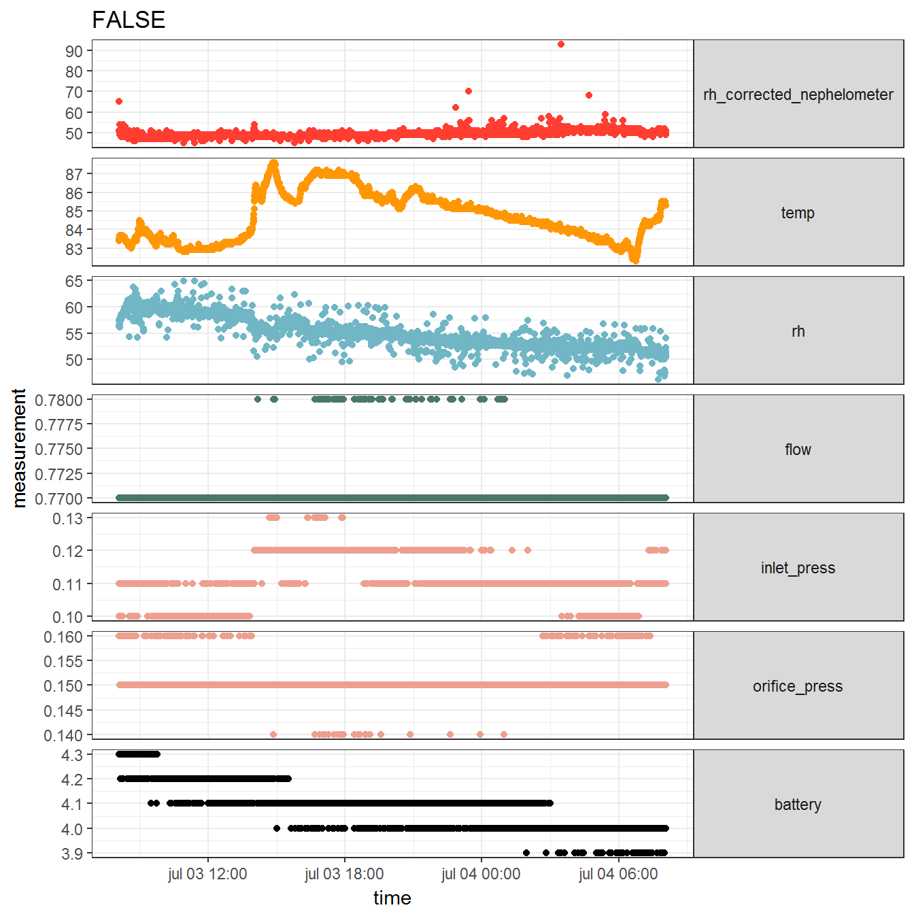

Introduction to ammon
M. Salmon and other CHAI project members
2017-02-13
Introduction
This package aims at supporting the analysis of PM2.5 measures made with RTI MicroPEM. RTI MicroPEM are personal monitoring devices (PM2.5 and PM10) developped by RTI international.
The goal of the package functions is to help in two main tasks:
Checking individual MicroPEM output files after, say, one day of data collection.
Building a data base based on output files, and clean and transform the data for further analysis.
For the examination of individual files, the package provides a function for transforming the output of a RTI MicroPEM into an object of a R6 class called micropem, functions for examining this information in order to look for possible problems in the data. The package moreover provides a Shiny app used for the field work of the CHAI project, but that could easily be adapted to other contexts.
This document aims at providing an overview of the functionalities of the package.
Checking individual files: from input data to micropem objects
The MicroPEM device outputs a csv file with all the information about the measures, depending on the options chosen in RTI MicroPEM software when uploading data, for instance:
the measures themselves (relative humidity corrected nephelometer),
other measures that can help interpret them or check that no problem occured (temperature, relative humidity, battery, orifice pressure, inlet pressure, flow, accelerometer variables, reasons for shutdown, and variables related to user compliance),
a reminder of parameters set by the user (calibration parameters, frequency of measures)
and information about the device (filter ID, version of the software, etc). This is a lot of information, compiled in a handy csv format that is optimal for not loosing any data along the way, but not practical for analysis.
Therefore, the micropem package offers a R6 class called micropem for storing the information, that will be easier to use by other functions. The class has fields with measures over time and a field that is a list containing all the information located at the top of the MicroPEM output file, called settings. Here is a picture of a RTI MicroPEM output file showing how the information is stored in the R6 class.

alt text
The convert_output function.
The convert_output only takes one arguments as input: the path to the output file. The result of a call to this function is an object of the class micropem. Below is a example of a call to convert_output followed by a call to the print method.
library("rtimicropem")
micropem_example <- convert_output(system.file("extdata", "CHAI.csv", package = "rtimicropem"))
class(micropem_example)## [1] "micropem" "R6"print(micropem_example)## An object of class micropem (R6 class)
## A summary of measures is:
##
## measure no._of_not_missing_values median mean minimum maximum variance
## -------------------------- -------------------------- ------- ----------- -------- -------- ----------
## rh_corrected_nephelometer 8634 49.00 49.3745657 45.00 93.00 1.6780557
## temp 2878 84.50 84.6830438 82.30 87.60 1.7180023
## rh 8634 54.60 55.0061733 46.20 64.90 7.6665285
## battery 1464 4.10 4.0872268 3.90 4.30 0.0078272
## inlet_press 2878 0.11 0.1111015 0.10 0.13 0.0000538
## orifice_press 2878 0.15 0.1505455 0.14 0.16 0.0000072
## flow 2878 0.77 0.7703023 0.77 0.78 0.0000029
##
## Settings were:
##
## value
## ---------------------------------- -----------------------
## downloadDate 2015-04-07
## totalDownloadTime 18
## deviceSerial MP1411
## dateTimeHardware 2013-02-15
## dateTimeSoftware 2014-01-24
## version v2.0.5136.37657
## participantID
## filterID CM1411
## participantWeight NA
## inletAerosolSize PM2.5
## laserCyclingVariablesDelay 1
## laserCyclingVariablesSamplingTime 1
## laserCyclingVariablesOffTime 8
## SystemTimes No cycling - Always On
## nephelometerSlope 10
## nephelometerOffset 0
## nephelometerLogInterval 10
## temperatureSlope 10
## temperatureOffset 0
## temperatureLog 30
## humiditySlope 10
## humidityOffset 0
## humidityLog 10
## inletPressureSlope 40.950.000
## inletPressureOffset 0
## inletPressureLog 30
## inletPressureHighTarget 1280
## inletPressureLowTarget 768
## orificePressureSlope 40.950.000
## orificePressureOffset 0
## orificePressureLog 30
## orificePressureHighTarget 2167
## orificePressureLowTarget 1592
## flowLog 30
## flowHighTarget 900
## flowLowTarget 200
## flowRate 0.5
## accelerometerLog 5
## batteryLog 60
## ventilationSlope NA
## ventilationOffset NA
Visualizing information contained in a micropem object
Plot method
The R6 micropem class has its own plot method. It allows to draw a plot of all time-varying measures against the timeDate field. It takes two arguments: the micropem object to be plotted, and the type of plots to be produced, either a “plain” ggplot2 plot with 6 facets, or its interactive version produced with the rbokeh package – the corresponding values of type are respectively “plain” and “interactive”.
Below we show to examples of uses of the plot method on a micropem object.
This is a “plain” plot.
data("micropemChai")
par(mar=c(1,4,2,1))
micropemChai$plot()
The code below would produce an interactive representation: the y-value is displayed when mouse is over each point. It is intended to be used as quick visualization tool as well, not as a plot method for putting a nice figure in a paper.
library("rbokeh")
p <- micropemChai$plot(type = "interactive")
p
summary method
Plotting the micropem object is already a good way to notice any problem. Another methods aims at providing more compact information about the time-varying measures. It is called summary and outputs a table with summary statistics for each time-varying measures, except timeDate.
Below is an example of use of this method.
library("xtable")
data("micropemChai")
results <- micropemChai$summary()
results %>% knitr::kable()| measure | no._of_not_missing_values | median | mean | minimum | maximum | variance |
|---|---|---|---|---|---|---|
| rh_corrected_nephelometer | 8634 | 49.00 | 49.3745657 | 45.00 | 93.00 | 1.6780557 |
| temp | 2878 | 84.50 | 84.6830438 | 82.30 | 87.60 | 1.7180023 |
| rh | 8634 | 54.60 | 55.0061733 | 46.20 | 64.90 | 7.6665285 |
| battery | 1464 | 4.10 | 4.0872268 | 3.90 | 4.30 | 0.0078272 |
| inlet_press | 2878 | 0.11 | 0.1111015 | 0.10 | 0.13 | 0.0000538 |
| orifice_press | 2878 | 0.15 | 0.1505455 | 0.14 | 0.16 | 0.0000072 |
| flow | 2878 | 0.77 | 0.7703023 | 0.77 | 0.78 | 0.0000029 |
Shiny app developped for the CHAI project
In the context of the CHAI project, we developped a Shiny app based on the previous functions, that allows to explore a MicroPEM output file. The app is called by the function run_shiny_app with no argument. There is one side panel where one can choose the file to analyse. There are four tabs:
One with the output of a call to the
summarymethod of themicropemobject created,One with the output of a call to the
alarmCHAIfunction that performs a few checks specific to the CHAI project,One with the output of a call to the plot method,
One with the output of a call to
summarySettings.
This app allows the exploration of a MicroPEM output file with no R experience.
Below we show screenshots of the app.
alt text

alt text

alt text

alt text
From a bunch of output files to data ready for further analysis
The batch_convert function allows to convert a set of MicroPEM output files into two csv files, one containing the settings, one containing the measures, in each case with a filename column representing the full filename of the original file.
These csv files can then be used for transformation by device ID for instance, or for analysis by date, or by participant ID of a study if the participant ID is contained in the filename or in the initial MicroPEM output files. The csv file with all the settings of all MicroPEM output files can help checking whether the different monitoring sessions were done in similar conditions.